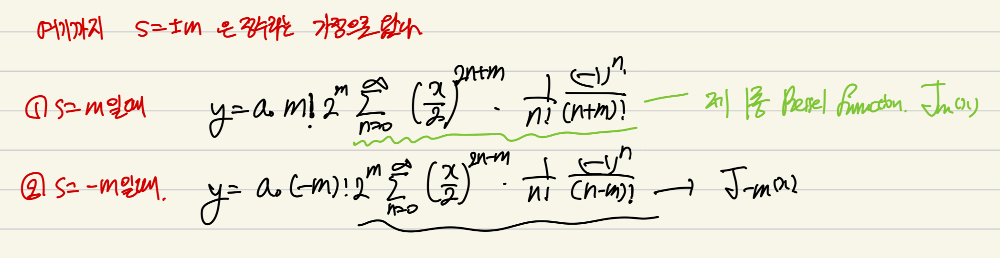

<!DOCTYPE html>
<html lang="ko" data-theme="light">
<head>
  <meta charset="utf-8">
  <meta name="viewport" content="width=device-width, initial-scale=1">
  <title>Bessel&#x27;s Equation_Part1 | Sehyeog Kim</title>
  <link rel="stylesheet" href="../../../../assets/css/style.css">
  <script>!function(){var t=localStorage.getItem("theme")||"light";document.documentElement.setAttribute("data-theme",t)}();</script>
</head>
<body>
  <button class="theme-toggle" aria-label="Toggle theme"><svg class="icon-sun" viewBox="0 0 24 24" fill="none" stroke="currentColor" stroke-width="2" stroke-linecap="round" stroke-linejoin="round"><circle cx="12" cy="12" r="5"/><line x1="12" y1="1" x2="12" y2="3"/><line x1="12" y1="21" x2="12" y2="23"/><line x1="4.22" y1="4.22" x2="5.64" y2="5.64"/><line x1="18.36" y1="18.36" x2="19.78" y2="19.78"/><line x1="1" y1="12" x2="3" y2="12"/><line x1="21" y1="12" x2="23" y2="12"/><line x1="4.22" y1="19.78" x2="5.64" y2="18.36"/><line x1="18.36" y1="5.64" x2="19.78" y2="4.22"/></svg><svg class="icon-moon" viewBox="0 0 24 24" fill="none" stroke="currentColor" stroke-width="2" stroke-linecap="round" stroke-linejoin="round"><path d="M21 12.79A9 9 0 1 1 11.21 3 7 7 0 0 0 21 12.79z"/></svg></button>

  <header class="mobile-header">
    <span class="site-title">Sehyeog Kim</span>
    <button class="menu-toggle" aria-label="Menu">&#9776;</button>
  </header>
  <div class="sidebar-overlay"></div>

  <div class="site-wrapper">
    <aside class="sidebar">
      <div class="sidebar-bg">
        
      </div>
      <div class="sidebar-profile">
        
        <h1 class="profile-name">Sehyeog Kim</h1>
        <p class="profile-bio">AI &amp; Computational Engineering<br>Personal Blog</p>
        <div class="profile-links">
          <a href="https://github.com/Sehyeogkim" target="_blank" rel="noopener">
            <svg viewBox="0 0 16 16" width="15" height="15" fill="currentColor"><path d="M8 0C3.58 0 0 3.58 0 8c0 3.54 2.29 6.53 5.47 7.59.4.07.55-.17.55-.38 0-.19-.01-.82-.01-1.49-2.01.37-2.53-.49-2.69-.94-.09-.23-.48-.94-.82-1.13-.28-.15-.68-.52-.01-.53.63-.01 1.08.58 1.23.82.72 1.21 1.87.87 2.33.66.07-.52.28-.87.51-1.07-1.78-.2-3.64-.89-3.64-3.95 0-.87.31-1.59.82-2.15-.08-.2-.36-1.02.08-2.12 0 0 .67-.21 2.2.82.64-.18 1.32-.27 2-.27.68 0 1.36.09 2 .27 1.53-1.04 2.2-.82 2.2-.82.44 1.1.16 1.92.08 2.12.51.56.82 1.27.82 2.15 0 3.07-1.87 3.75-3.65 3.95.29.25.54.73.54 1.48 0 1.07-.01 1.93-.01 2.2 0 .21.15.46.55.38A8.013 8.013 0 0016 8c0-4.42-3.58-8-8-8z"/></svg> GitHub
          </a>
        </div>
      </div>
      <nav class="sidebar-nav">
        <a href="/" class="nav-item nav-home">Home</a>
        <span class="nav-group-label">AI</span>
        <a href="/blog/ai/agentic-ai-theory/" class="nav-item">Agentic_AI_Theory<span class="nav-post-count">8</span></a>
        <a href="/blog/ai/deep-learning/" class="nav-item">Deep-learning<span class="nav-post-count">14</span></a>
        <a href="/blog/ai/machine-learning/" class="nav-item">Machine_Learning<span class="nav-post-count">11</span></a>
        <a href="/blog/ai/sensitivity-analysis/" class="nav-item">Sensitivity_Analysis<span class="nav-post-count">3</span></a>
        <span class="nav-group-label">AI_Application</span>
        <a href="/blog/ai_application/claude/" class="nav-item">Claude<span class="nav-post-count">2</span></a>
        <span class="nav-group-label">BioMechanics</span>
        <a href="/blog/biomechanics/blood-flow-and-metabolism/" class="nav-item">Blood-Flow-and-Metabolism<span class="nav-post-count">12</span></a>
        <a href="/blog/biomechanics/cardiovascular-diseases/" class="nav-item">CardioVascular_Diseases<span class="nav-post-count">8</span></a>
        <span class="nav-group-label">Mechanical_Engineering</span>
        <a href="/blog/mechanical-engineering/computational-linear-algebra/" class="nav-item">Computational-Linear-Algebra<span class="nav-post-count">15</span></a>
        <a href="/blog/mechanical-engineering/computational-fluid-dynamics/" class="nav-item">Computational_Fluid_Dynamics<span class="nav-post-count">14</span></a>
        <a href="/blog/mechanical-engineering/continuum-mechanics/" class="nav-item">Continuum-Mechanics<span class="nav-post-count">9</span></a>
        <a href="/blog/mechanical-engineering/engineering-mathematics/" class="nav-item active">Engineering_Mathematics<span class="nav-post-count">14</span></a>
        <a href="/blog/mechanical-engineering/finite-element-method/" class="nav-item">Finite-Element-Method<span class="nav-post-count">1</span></a>
        <a href="/blog/mechanical-engineering/fluid-mechanics/" class="nav-item">Fluid_Mechanics<span class="nav-post-count">18</span></a>
        <a href="/blog/mechanical-engineering/gas-dynamics/" class="nav-item">Gas_Dynamics<span class="nav-post-count">24</span></a>
        <a href="/blog/mechanical-engineering/heat-transfer/" class="nav-item">Heat-transfer<span class="nav-post-count">8</span></a>
        <a href="/blog/mechanical-engineering/solid-mechanics/" class="nav-item">Solid_Mechanics<span class="nav-post-count">25</span></a>
        <a href="/blog/mechanical-engineering/thermodynamics/" class="nav-item">Thermodynamics<span class="nav-post-count">14</span></a>
        <a href="/blog/mechanical-engineering/viscous-flow/" class="nav-item">Viscous_Flow<span class="nav-post-count">28</span></a>
      </nav>
    </aside>

    <main class="main-content">
      <div class="breadcrumb"><a href="/">Home</a><span class="sep">/</span><a href="/blog/mechanical-engineering/">Mechanical_Engineering</a><span class="sep">/</span><a href="/blog/mechanical-engineering/engineering-mathematics/">Engineering_Mathematics</a><span class="sep">/</span><span>Bessel&#x27;s Equation_Part1</span></div>
<a href="/blog/mechanical-engineering/engineering-mathematics/" class="back-link">&larr; Back to Engineering_Mathematics</a>
<div class="page-header"><h1>Bessel&#x27;s Equation_Part1</h1></div>
<div class="post-meta"><span class="meta-item"><span class="meta-label">Date:</span> 2024-09-26</span><span class="meta-item"><span class="meta-label">Category:</span> Engineering_Mathematics</span><span class="meta-item"><span class="meta-label">Source:</span> <a href="https://jeffdissel.tistory.com/101" target="_blank" rel="noopener">link</a></span></div>
<article class="post-content"><p>심장박동의<br />
Pulsatile Flow<br />
의 유동해석<br />
(주기적으로 움직이는 심박에 의한)<br />
(혈액 속도장 계산)<br />
과정속에서,<br />
뜬금없이<br />
Bessel function<br />
이 등장해버렸다.<br />
<br />
(베셀 함수의 1종 해)<br />
이 친구는 학부시절,<br />
열전달 (전도) 시간에 잠깐 등장했었지만,<br />
교수님께서, 이런 함수 기억나지??<br />
공학수학때 배웠었짢아 하고 넘어갔던 기억이 있다.<br />
(물론 공학수학에서, 이런게 있다 이랬던 것 같다.)<br />
이번 블로그 글로<br />
정복해보자.</p>
<hr />
<p>먼저,<br />
Bessel's Equation은<br />
<br />
(second-order linear ordinary differential equation)<br />
처럼 생겼다.<br />
문제는, 저렇게 생긴 함수가 실제 공학문제에서 많이 등장하는 것이다.<br />
ex1)<br />
공학수학 책에서 살짝 언급했던 case는 바로<br />
2D circular Membrane of Drumhead<br />
둥근 드럼의 파동의 움직임을 나타내는 방정식.<br />
<br />
ex2)<br />
헬름 볼츠 방정식<br />
(파동방정식)<br />
<br />
ψ: scalar or vector function<br />
k: wave number<br />
(<br />
r<br />
,<br />
θ<br />
,<br />
z<br />
) coordinate에서<br />
laplace 연산자를 풀어주면.<br />
<br />
<br />
이후에, 공학수학에서<br />
ODE풀던 방식 그대로<br />
Separation variable 방식을 사용한다.<br />
<br />
넣고 전개를 진행하면, radial component에서 bessel eq이 등장한다.<br />
결론적으로, bessel equation이 생각보다 많이 등장하는 것을 확인하였고,<br />
이제 solution을 구해보자.</p>
<hr />
<p>베셀 함수 같은 경우, 양변을 x^2로 나눠주면,<br />
x = 0 에서 발산하는 방정식임을 확인 할 수 있다.<br />
<br />
발산하는 구간이 없는 경우, 우리는 ODE 공학수학 시간에,<br />
테일러 급수를 사용하여,<br />
<br />
해를 구하였다. 하지만, 이를 대입해도<br />
분모의 x를 제거하지 못하여 발산함을 알 수 있다.<br />
이를 해결하는 방법이 바로<br />
프로비니우스의 해법<br />
이다.<br />
밑에처럼, 테일러 급수 해의 형태에<br />
x^s를 추가로 곱해주는 형태의 해.<br />
(임의의 실수 s)<br />
이제, 가정한 해로 미분을 진행한 후 대입해주자.<br />
<br />
이제 대입.<br />
<br />
이제, 가정한 해를 기존 bessel equation에 대입해주면,<br />
2번 식이 유도된다.<br />
<br />
이후에 가장 낮은 차수인 x^s의 계수를 추출해주고,<br />
항등식이므로 계수 = 0 식을 세우면,<br />
일반해로<br />
s = +m or -m 이 도출된다.<br />
이후, m이 정수라고 가정하고 들어가보자.<br />
(정수 아닐때도 추후에 살펴보자)<br />
<br />
계속해서, x^s, x^(s+1),.. 들의 계수 = 0 식을 세워보면,<br />
규칙이 보이기 시작한다.<br />
<br />
a홀수항 = 0 , 짝수항은 규칙적으로 곱해지는 것.<br />
따라서, 모든 a들을 기존 가정했던 해에 대입해주자.<br />
(a 홀수항 사라지고, 짝수항은 특정규칙)<br />
<br />
여기서, s = +m, -m (정수)인 경우를 먼저 살펴보면.<br />
<br />
여기서 드디어, Bessel function이 derived 된다.<br />
여기서, 감마함수의 성질을 이용하여.<br />
<br />
<br />
<br />
<br />
(n 이 자연수일때)<br />
다음과 같이 나타낼 수 있다.<br />
<br />
자 여기서 우리는 ODE의 두 해를 구했고,<br />
이들의 합으로 일반해를 구하면 된다.<br />
(일반적인 ODE의 해)<br />
하지만, 그전에<br />
두해가<br />
Linearly independent or dependent<br />
인지 확인해야한다<br />
m 이 정수일때 J-m(x) 를 살펴보자.<br />
<br />
여기서 핵심은 감마함수는<br />
x 가 음의정수, 0 일때 발산한다는 것.<br />
따라서,<br />
<br />
뒷항 만 남게 되고, 치환을 한 후에<br />
펙토리알 부분을 쪼개주자.<br />
<br />
쪼갠 팩토리알 부분을 감마함수에 넣으면,<br />
마법같이 Jm(x)가 등장하게 된다.<br />
결론적으로 m이 정수일때는<br />
Jm(x), J-m(x) 두 해가 서로 linearly dependent하다는 것.<br />
따라서,<br />
y = a Jm(x) + b J-m(x)<br />
(a,b는 상수)<br />
이렇게 베셀함수의 일반해를 나타낼 수 없다.<br />
여기서, 해결책으로<br />
제2종 bessel 함수<br />
가 등장하게 된다.<br />
다음과 같이, Jm(x) 와 J-m(x)의 선형조합으로 나타내어<br />
bessel 방정식의 해가 된다는 것은 자명하다.<br />
<br />
결론적으로, 다음과 같이 정의하면<br />
Jm(x) 와 Ym(x)는<br />
선형독립으로<br />
(사실 선형독립이 되도록 정의한거임)<br />
y = C1 Jm(x) + C2 Ym(x)<br />
형태로 베셀 방정식의 일반해를 나타낼 수 있다.<br />
너무 길어진 관계로 다음 포스터에서<br />
1. Jm(x), Ym(x) 가 선형독립<br />
2. m 이 정수가 아닐때, 베젤 함수의 해<br />
두가지에 대해서 다뤄보겠습니다.</p></article>
      <footer class="site-footer">
        <p>&copy; 2026 Sehyeog Kim</p>
      </footer>
    </main>
  </div>
  <script src="../../../../assets/js/main.js"></script>
</body>
</html>